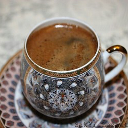

| Home | History | How to make | Social aspect | What makes Arabic coffee unique! |
|---|

Social Aspect:
1) Throughout the Arabian Peninsula coffee has played many and major roles in the
region's cultural aspect;
* Having and serving coffee is a gesture of welcome, generosity and sophistication.
* Coffee is served in almost every traditional or non-traditional event. Such as,
weddings, special holidays and family gatherings.
2) The phrase "let's have a cup of coffee together", often means getting together to
discuss mutual interests, agreements and news.

3) In Arabic societies, the head of the household usually always drink or sips the first
cup from any freshly brewed "Qahwa"; which is the word for coffee in arabic, to make
sure that the quality is satisfactory for others to drink.